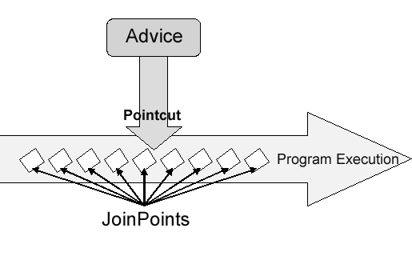

Spring 面向切面
面向切面编程以前对我来说是一个很深奥的概念,觉得很神奇,切面是什么,为什么要面向切面,面向切面有什么使用场景呢? 带着这些疑问好好的看了书,写点读书笔记
在软件开发中,有些程序关注业务实现有些程序关注系统需求, 这两者之间逻辑上没有什么关联点,比如记录一个请求的响应时间,日志等这些跟业务并没有联系,如果实现记录日志的需求耦合在业务代码中那么必然很麻烦且不好维护. 通过面向切面编程,让切面去帮我们处理记录日志的需求,那么就做到解耦了.
现在我们来了解面向切面编程的元素和概念定义.
定义AOP术语
AOP的常用术语有一下几点: 切面, 通知, 切点, 连接点. 一个个介绍
切面 aspect
切面实际上是一个类, 里面定义了通知和切点.简单的来说就是切面定义了一个处理过程, 在什么时候什么地方处理什么任务.
通知 advice
通知这个词看起来高大上, 实际上就是定义了在什么时候处理什么任务,他是切面类定义的一个方法.通知的调用时间主要分为几种:
- Before: 在方法被调用之前执行通知
- After: 在方法被调用完成之后执行通知(无论失败与否)
- After-returning: 在方法成功执行之后调用通知
- After-throwing: 在方法抛出异常之后调用通知
- Around: 通知包裹了被通知方法, 在被通知方法调用之前和之后执行自定义的行为
连接点 joinpoint
连接点是应用执行过程中能够插入切面的一个点,这个点可以是调用方法时,抛出异常时,修改字段时.切面代码通过这些点插入到应用的正常流程中, 并添加新行为
切点 pointcut
切点定义了在什么地方执行通知,也就是切点定义了在什么连接点执行什么通知.
织入
织入是将切面应用到目标对象来创建新的代理对象的过程,切面在指定的连接点被织入到目标对象中,在目标对象的生命周期中有多点可以进行织入.
- 编译期: 切面在目标类编译期被织入
- 类加载期: 切面在目标类加载到JVM时被织入
- 运行期: 切面在应用运行过程中的某个时刻织入,在织入切面时,AOP容器会为目标对象动态创建一个代理对象. Spring是基于代理的AOP变体, Spring对AOP的支持只局限于方法拦截, 如果AOP需求超过了简单方法拦截的范畴, 利用Spring的DI把Spring Bean注入到Aspectj切面中.
Spring是在运行期间通知对象的,通过下面这幅图加深理解:

Spring的通知是JAVA标准类编写的, 定义通知所应用的切点可以通过在Spring配置文件中采用XML编写. Spring在运行期间通知对象,将切面织入到Spring管理的Bean中,当拦截到方法调用时, 在调用目标Bean方法之前,代理会执行切面逻辑.Spring只支持方法连接点,所以你可以认为Spring只能在方法上织入切面.
定义切点
如何定义一个切点?
举个例子: excution(* cn.dface.Instument.play(..))这里定义了一个切点: 在执行cn.dface.Instument.play的方法(..表示该方法可以是任意参数)触发通知.
还有什么表达式可以定义切点呢? Spring AOP需要使用AspectJ的切点表达式来定义切点.
| 指示器 | 说明 |
|---|---|
| arg() | 限制连接点匹配参数为指定类型的执行方法 |
| @args() | 限制连接点匹配参数由指定注解标注的执行方法 |
| excution() | 用于匹配连接点的执行方法 |
| this() | 限制连接点匹配AOP代理的Bean引用为指定类型的类 |
| target() | 限制连接点匹配目标对象为指定类型的类 |
| @target() | 限制连接点匹配特定的执行对象, 这些对象对用的类具备指定类型的注解 |
| within() | 限制连接点匹配的类型 |
| @within() | 限制连接点匹配注定注解所标注的类型 |
| @annotation | 限制匹配带有指定注解连接点 |
如何编写切点? 以excution表达式为例, 表达式已*开始表示我们不关心方法返回值的类型, 然后指定了全限定类名和方法名, 对于参数列表(..) 表示切点选择任意的play()方法,不论入参是什么.
如何在XML中声明切面
| 配置元素 | 说明 |
|---|---|
<aop:advisor> |
定义通知器 |
<aop:after> |
定义AOP后置通知 |
<aop:after-returning> |
定义After-returning 通知 |
<aop:after-throwing> |
定义after-throwning 通知 |
<aop:around> |
定义环绕通知 |
<aop:aspect> |
定义通知 |
<aop:aspectj-autoproxy> |
定义@AspectJ注解驱动的切面 |
<aop:before> |
定义前置通知 |
<aop:config> |
顶层AOP配置元素 |
<aop:declare-parents> |
为被通知的对象引入额外接口, 并透明实现 |
<aop:pointcut> |
定义切点 |
注解AOP
使用注解来创建切面是AspectJ 5所引入的关键特性.
package org.xyz;
import org.aspectj.lang.annotation.Aspect;
@Aspect // 切面注解
@Component
public class NotVeryUsefulAspect {
@Pointcut("execution(* transfer(..))")// the pointcut expression
private void anyOldTransfer() {}// the pointcut signature
}
需要我们注意的是@Aspect并没有将这个类加载到Spring容器,所以我们加上了@Component. excution是Spring支持的一种切点, 还有call, get, set, preinitialization, staticinitialization, initialization, handler, adviceexecution, withincode, cflow, cflowbelow, if, @this